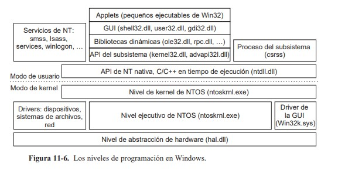

Programación de Windows 11
Casi todo el código escrito para Windows utiliza a Win32 directamente o a .NET (que a su vez se ejecuta encima de Win32).

La figura anterior muestra los niveles del Sistema operativo Windows. Debajo de los niveles de applet y de GUI de Windows están las interfaces de programación en las que se basan las aplicaciones
Requisitos de Windows 11
Para instalar o actualizar a Windows 11, los dispositivos deben cumplir los siguientes requisitos mínimos de hardware:
- Procesador: 1 gigahercio (GHz) o más rápido con dos o más núcleos en un procesador de 64 bits compatible o un sistema en un chip (SoC).
- RAM: 4 gigabytes (GB) o más
- Almacenamiento: se requiere 64 GB* o más de almacenamiento disponible para instalar Windows 11
- Es posible que se necesite espacio de almacenamiento adicional para descargar actualizaciones y habilitar características específicas.
- Tarjeta gráfica: compatible con DirectX 12 o posterior, con un controlador WDDM 2.0.
- Firmware del sistema: UEFI, compatible con Arranque seguro.
- TPM: Módulo de plataforma segura (TPM) versión 2.0.
- Pantalla: pantalla de alta definición (720p), monitor de 9" o superior, 8 bits por canal de color.
- Conexión a Internet: la conectividad a Internet es necesaria para realizar actualizaciones y para descargar y usar algunas características.
La edición Windows 11 Home requiere una conexión a Internet y una Cuenta Microsoft para completar la configuración del dispositivo en el primer uso.